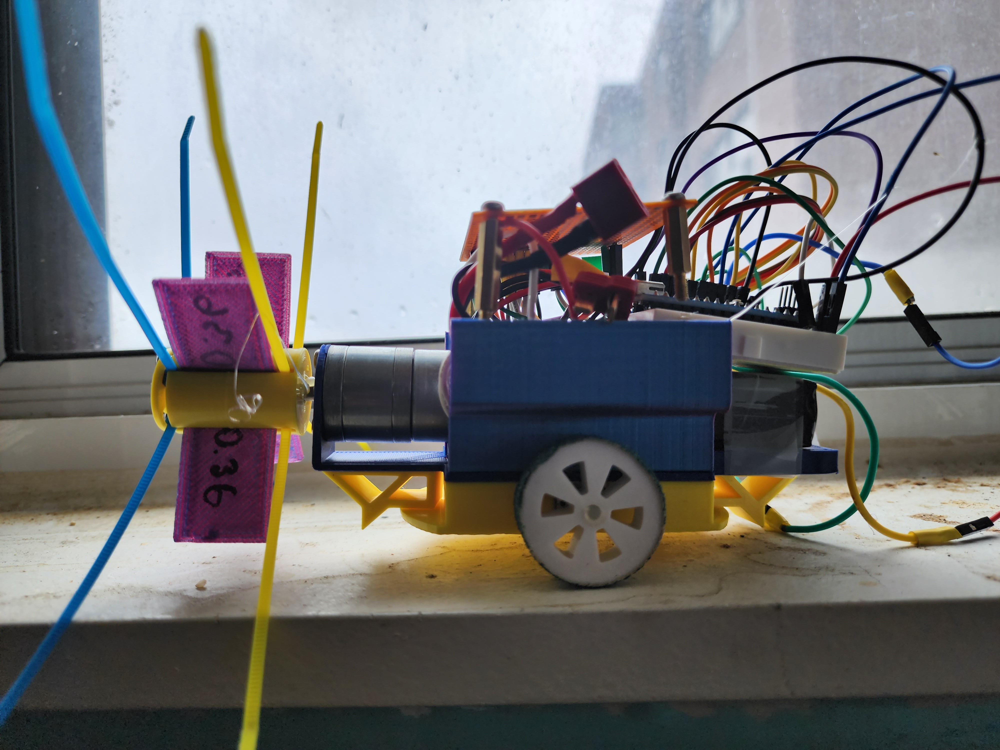

This project template is for a gutter cleaning robot PCB featuring the ESP32-S3 Wroom Module. It supports various functionalities needed for robust and efficient gutter cleaning operations.
Key features include:
This project adheres to standard PCB design practices and includes specific measures for ensuring reliability and durability in outdoor environmental conditions.
The schematic and layout are designed to accommodate all specified components and ensure optimal placement for operational efficiency and maintenance ease.
Additional resources and design guidelines can be referenced from the official Espressif Documentation.

(c) 2024 JJ
Adapted from the Raspberry Pi HAT template:
(c) 2016 Ashton Johnson
(c) 2016 Kicad Developers